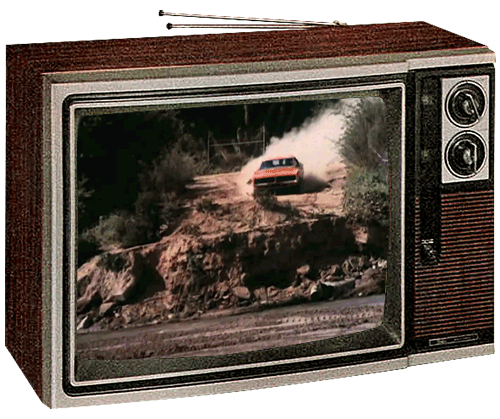
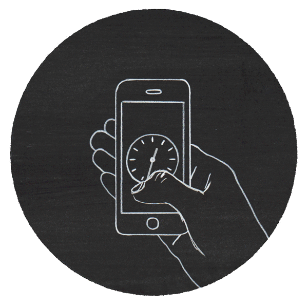

Intro
Never before have we (humans) lived in a period where news & information is so accessible.
Accessible for reasons that new code-driven technologies bring factors of quantity, allowance and
inexpensiveness to all peoples, regardless of their age, gender, race or views.
These technologies directly influence the kind of news & information that is being produced for the average person, and it is this correlation that I personally find interesting.
So lets take a brief look at the past, present and future of personal news deliverance from two angles; Content & Interface.
A little about me...👨🏫
For a bit of context, this is how I get my news:
Primary
Secondary
With the rise in accessibility, comes an increase in media-options & sheer amount of content — content that is not necessarily true, useful or of quality.
My personal interest in this topic somewhat stems from an early distrust in most media platforms. But, it is from this caution, comes a drive to seek out quality, curated content that meets my personal needs on a bunch of different levels. I may not necessarily represent the majority, but I do represent a demographic who seek out curated and personalised news.
The recent past
Interface: Paper
Content: ‘Current Affairs’
To view how technology has changed the way we receive news, it’s best to first look from where we have come.
Before mobile screens arrived in my lifetime, the primary vehicle of current-news was the physical newspaper, and niche material was primarily delivered by magazines.
The info being brought to people was a whole lot more centralised and designed to engage the masses. The reader would rely on content coming from 2-3 main sources, in Melbourne’s case this was mostly coming from The Age and The Herald Sun, for example.
The plastic wrapped & rolled newspaper would be hurled onto your front lawn every morning for $1 a day* — this was your primary subscription service.
*After interviewing Mum, she mentioned in the 90’s she paid roughly $1 per paper whereas now she pays $21 per month for The Age’s online subscription.
Next

Interface: Television
Content: Widespread, attention-grabbing
Next to rule was free-to-air TV in which brought a whole new method of receiving content. This interface allowed for the first time live-material in audio and video form to be beamed into the homes of people, spawning endless creative and disruptive possibilities.
The concept of ‘breaking news’ was normalised, and additionally, more alternative genres of news began to become available.
As the TV developed from analouge to digital, the user began to have much more control over how they accessed their news, with features such as recording, pausing and saving their media of choice.
But even still, this information was still limited to specific locations to where a television set was housed.
At this point, a persons news-journey may look something like this:
Newspaper —> TV —> Car Radio
While the same story would likely be seen/heard on the different mediums, it was not necessarily one cohesive experience.
With the smartphone, however, that all changed.
Note:
It is worth noting that according to Statista Research Department, TV still leads the charge of the way Australian people consciously access the news.However, this is of course dropping and it does not account for news people unconsciously take in (scrolling on social media, emails ect.)
 (statista.com)
(statista.com)
Now...

Interface: Screen (mobile)
Content: Targeted & curated
Never before have we had so much personal computing power available in our pocket, always.
It is incredible to think that if one needs to know any news-event, they can simply reach into their pocket and discover the answer.
A large chunk of society uses social media platforms like Facebook as their primary source for information — and with 73% of Australian news consumers claiming they regularly experience ‘fake news’ (Digital News Report,2018) on the platform (Australia News Sources 2018), it’s a bit of a worry.
The shape and nature of content are constantly evolving — and as previously mentioned, the sheer amount of it can bring a lot of crap. This can get quite hard to trust, and be overwhelming to process.
Make something worth paying for.
There are plenty of sources who are, however, providing trustworthy alternatives.
One example of a company who has successfully moved with the changing environment is the New York Times.
The NYT transformed from being a free traditional news company into a digitally innovative subscription-based service.
The success comes from embracing change and creating trust with their customers.
Their popular visual stories are a great example of working the content and interface together, in a really nice way:
These visual stories additionally use elements like animation paired with audio to create an interactive experience which generally will make the information delivered all the more memorable.
Targeting
Methods such as location and user-interest targeting use data and user online-habits to deliver curated content that seemingly knows what you want before you even do.
We continue to see news that is impressively curated to suit our needs and desires, this is a trend that will continue to grow.
However while some providers nail it, it can’t be said without mentioning that some of these experiences definitely feel invasive.
-----------------------
As technology becomes more advanced and interfaces change, the news will continue to become more personalised…to both embrace new tech and to gain the trust of the people accessing it.
A look ahead
Interface: Voice
Content: Personalisation
The next layer is going to be this conversational one.- Toby Walsh (Create Digital, 2019)
Walsh is an Aussie professor and an Artificial Intelligence expert & optimist. He highlights in many of his books and interviews that the next common & primary interface will, in fact, be Voice.
A movie in which highlights this well is Her.
We are already seeing this technology enter our lives in way of asking questions, making demands or ordering products such as with Google Home, Alexa, Siri and vehicle navigation. We are yet to see an operating system (OS) that cohesively spans across our multiple devices and locations (or one's daily news journey).
A OS that grows with you and creates a conversation rather than a one-way dialogue. A system that recognises your emotional reaction to news so it can then deliver personalised, niche information that you may be interested in next time.
The near future
It is fun to imagine scenarios where this voice-lead OS is matched with a walk-in virtual-reality experience...where you could essentially be transported live to the location of the actual news event, experiencing a story in such a way that you may as well of been there.
On the flip side, what does this look like when it is false news? As it becomes more challenging to comprehend what is truth, it is forever more important to be paying attention to where your news is coming from.
See this Obama Deepfake video, which displays just the beginnings of false, augmented-reality lead illusions:
While sources like social media do exist as a vehicle for these problems to thrive, organisations such as
the Centre for Humane Technology are pushing these tech giants to implement strategies and support policy that benefits the wellbeing of all of us (humans).
Interviews
To wrap up, I sought out the thoughts of a few and asked them how they pictured themselves receiving news in the next 10 years:
Josh, 25, Med Intern:
Some kind of shower-hologram situation.
Shalini, 23, Architecture student:
I am personally too overwhelmed with how it is now, moving back to the newspaper seems best.
Oliver, 26, Product designer:
I whatever tech wearable I have on me linking to hotspots (of sorts) as I walk past them,
for example; as I stroll past the Opera House, it feeds into my headphones or implant which artists are performing that month
Bonita, 52, Bookkeeper
I really enjoy podcasts at the moment, I think I will stay in this space for the next 10.